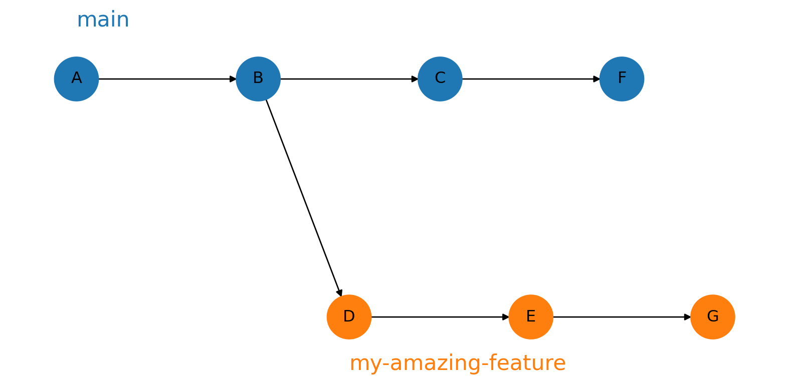

/var/folders/tt/dwhm_p0x405cp24nvndwmvb00000gp/T/ipykernel_38435/3127778238.py:67: UserWarning:
This figure includes Axes that are not compatible with tight_layout, so results might be incorrect.

R using Quarto.git.

R code and asked to “tidy it up” and produce a report based on it.git initgit addgit commitgit pushLiterate programming is a methodology introduced by Donald Knuth, whereby:
Frameworks like Quarto implement Literate programming.
Quarto documents:
{r}...).Markdown is a special way of annotating plain text that can be translated to formatted text.
This is plain text, *italic* and **bold**.
- We can have lists
- and even math! $e^{i\pi} = -1$.This is plain text, italic and bold.
- We can have lists
- and even math! \(e^{i\pi} = -1\).
Migrating to Quarto
Dear Jon,
Even though your results look great, the points look a little bit curved. Please could you see whether a nonlinear model fits better?
Best,
The Boss
I want to write the new feature. I also want to have the live code accessible for bug fixing.

git branchgit branch my-amazing-featuregit checkout my-amazing-feature.main.We often need to merge changes between branches. This is done using git merge.
Once done making changes on my-amazing-feature:
git checkout maingit merge my-amazing-featureWhen you run git merge git will “pick up” commits from my-amazing-feature and put them on `main.
Sometimes it is obvious how to do this…
/var/folders/tt/dwhm_p0x405cp24nvndwmvb00000gp/T/ipykernel_38435/3127778238.py:67: UserWarning:
This figure includes Axes that are not compatible with tight_layout, so results might be incorrect.
…sometimes less so!
/var/folders/tt/dwhm_p0x405cp24nvndwmvb00000gp/T/ipykernel_38435/299573845.py:76: UserWarning:
This figure includes Axes that are not compatible with tight_layout, so results might be incorrect.

If Git can’t work out how to merge you will get a merge conflict.
Git will mark conflicting lines in the file.